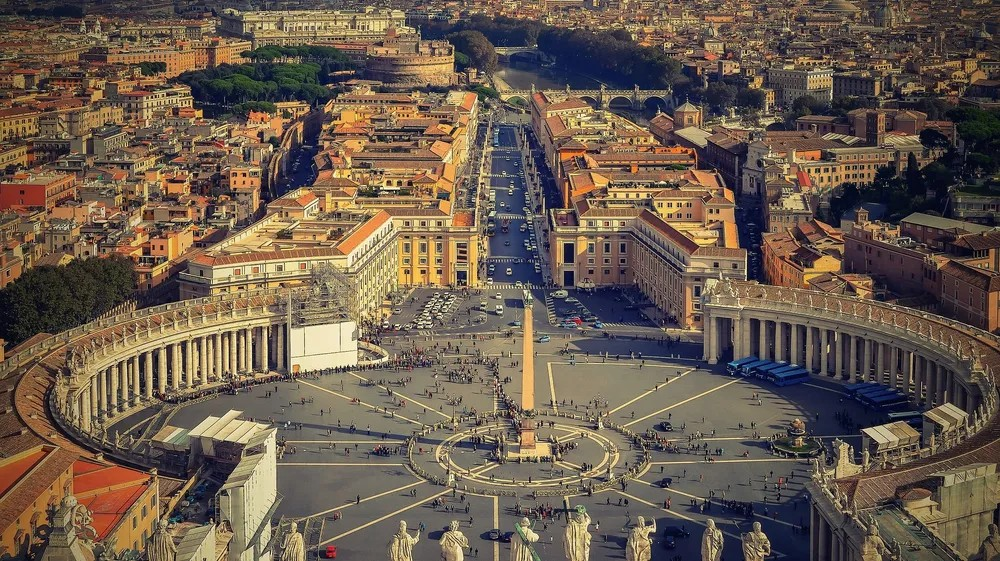

바티칸 시국(이탈리아어: Stato della Città del Vaticano, 영어: Vatican City State, 문화어: 바띠까노 도시 국가) , 약칭 바티칸은 이탈리아의 로마 시내에 위치한 위요지 도시국가이다. 바티칸 시는 바티칸 언덕과 언덕 북쪽의 바티칸 평원을 포함하며, 총 면적은 0.44km2에 인구는 수백 명에 불과한 극소 국가로서 면적으로 보나 인구로 보나 전세계의 주권 국가 중 가장 작다.
교황이 통치하는 일종의 신권 국가로, 전 세계 로마 가톨릭교회의 총본산이다.
| 장소 | 운영 시간 및 주의 사항 | |
| 미술관 | 08:00 ~ 20:00 | 일요일 및 공휴일 휴무 |
| 시스티나 성당 | 08:00 ~ 20:00 | 일요일 및 공휴일 휴무 |
| 성 베드로 성당 | 07:00 ~ 19:00(하절기) | 07:00 ~ 18:30(동절기) |
